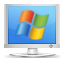
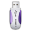
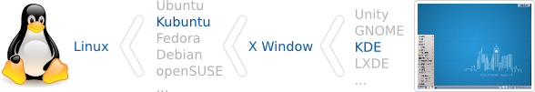

認識 ezgo12
● ezgo 跟 Windows 還有蘋果電腦的 Mac OS 一樣都是屬於電腦作業系統：
● 不同的是，ezgo 收錄的軟體都是採用公共版權的授權方式，讓所有人可以自由而免費的使用，
並且可以任意的複製與朋友分享
● ezgo 的基礎開發除了包含一個名為 Kubuntu 的 Linux 作業系統
● ezgo 還收錄了 100 多個應用軟體和 200 多個動畫模擬教學範例，並且可以讓您用各種方式來體驗
自由軟體的世界
 


● ezgo 的設計理念
ezgo 的設計理念聚焦在視窗環境下的自由軟體應用，相信不管是哪一套 Linux，都會有 X Window 視窗作業環境，而現在比較常見的桌面環境 GNOME和KDE等也都是以X Window為基礎所建構而成的，然而不管是GNOME、KDE或其它桌面環境，相信一般的使用習慣，一定還是以系統下的應用軟體為主，在微軟 Windows下，您會透過「開始功能表」的選單按鈕來啟動應用軟體，而在Linux下也有類似「開始功能表」的選單按鈕，它的名稱叫作「應用程式」，您 可以透過「應用程式」選單按鈕，開始體驗自由軟體中豐富多元的應用軟體，而ezgo就是著眼於「應用程式」選單的整理，包含在軟體名稱的前面加上分類標籤 或註解!!
ezgo並不是在創造一個新的Linux，而是一個將多元的自由軟體單純化的自由軟體應用推廣光碟，因為Linux已經夠多了，不需要再多一套ezgo Linux來湊熱鬧，我們只希望可以因為ezgo而讓大家更輕鬆的體驗自由軟體，享用全世界的智慧結晶。

● 不只與國際大廠接軌，更要與國際接軌
當您開啟 ezgo11 您會看到一個多元的資訊世界，您可以在「應用程式」選單中看到各種類別的自由軟體，內容包含辦公、美工、影音、網路、教育、遊戲...等，您還可以透過 「Muon 軟體中心」或「Muon 套件管理員」新增更多的自由軟體，每一個自由軟體都代表是一個公共授權的國際計劃，相信您可以深刻的感受到，原來全世界已經有這麼多的自由軟體等著我們去 享用，而關鍵只在於我們是否願意開始接觸公共授權的自由軟體，並與全世界一起共享這些智慧結晶。
● 不只介紹給您自由軟體，更要與您分享自由教材
ezgo有一個很大的特色就是不只介紹給您好用的自由軟體，並且收錄國際間很棒的自由教材計劃，例如科羅拉多大學的PhET自由開放的線上物理、化學、生 物、地球科學和數學模擬教學範例計畫，您可以在開啟Firefox瀏覽器後在書籤工具列中看到自由教材的選單，點進PhET後您會看到非常多的動態教學範 例，相信您可以感受到自由共享力量的偉大，原本難以理解的數理科學理論，讓您一看就懂，更可貴的是經過這些作者的巧思，完成了一個個精彩的範例後，還能無 私的讓大家可以自由的使用，相信您看過之後也會迫不及待的想要與好朋友分享。
● 不只是共享社群智慧結晶，更要邀您一起參與社群貢獻
ezgo雖然自由軟體資源匯整為主，讓大家可以更輕鬆的體驗自由軟體，但我們也希望每一位自由軟體的使用者也可以是自由軟體的貢獻者，尤其自由軟體既然是 一個共創共享的世界，我們當然希望能因為您的參與讓這一個世界變的更好，因此除了ezgo之外，我們還有二個相關延伸計劃在支持ezgo的發展，一個是以 自由軟體教學資源匯整為主的Wekey-wiki教學資源共筆網站，以及以自由軟體中文化為主的Tryneeds-Chinese中文化共筆平台，這二個 延伸計劃和ezgo一樣，都是建立在「應用程式」選單，辦公、美工、影音、網路、教育、遊戲...等分類的架構下，我們希望透過這些計劃，共享自由軟體社 群的智慧結晶，也希望能邀請您一起參與這些計劃並且成為社群的一份子，一起創造資訊應用雙贏甚至多贏的局面。